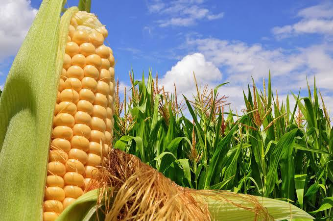

EL MAIZ EN MI COMUNIDAD
Sauta, Nayarit, es una comunidad que, como muchas en la
region, tiene una rica tradicion agricola, y el maiz es uno de los
cultivos mas importantes. Aqui te dejo algunos aspectos sobre el maiz
en esta comunidad:
1. *Cultivo
Tradicional*
En Sauta, el maiz es un cultivo fundamental para la alimentacion de las
familias. Se cultiva principalmente maiz amarillo y blanco, que se
utilizan para hacer tortillas, tamales y otros platillos tradicionales.
2. *Variedades Locales*
Como muchas comunidades rurales en Mexico, Sauta puede cultivar
variedades de maiz nativas que son adaptadas a las condiciones
climaticas y del suelo locales. Esto no solo ayuda a preservar la
biodiversidad, sino que tambien permite a los agricultores obtener
mejores rendimientos.
3. *Cultura y Tradicion*
El maiz no solo es un alimento basico, sino que tambien esta presente
en las festividades y tradiciones locales. Se pueden realizar eventos
comunitarios donde se celebra el cultivo del maiz con danzas, comidas
tipicas y rituales.
El maiz es un cultivo fundamental en Nayarit, Mexico, con una rica
historia y diversidad. Una de las variedades mas destacadas es el maiz
de Jala, originario de Jala, Nayarit, conocido por su gran tamaño,
tanto del tallo como de la mazorca.
*Caracteristicas del Maiz
- La planta puede llegar hasta los 5 metros de alto.
- La mazorca presenta una apariencia alargada (35-45 cm, incluso 60 cm en algunos
casos) y ancha.
- Sus granos son grandes, gruesos, blanquecinos y con una
depresion pronunciada.
